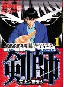

近麻ゴールドに、若き真剣師、滝沢の日常というコラムがある。日本プロ麻雀連盟の滝沢和典というプレーヤーが、自分の日常を記したコラム。
真剣師の意味は、「真剣(一所懸命)に打つ人」ではなく、「真剣(命金を賭けて)で打つ人」。つまり真剣師は、単なるジャンブラーではなく、バクチ打ちの異名でもある。
この真剣師、たしか元々は囲碁や将棋世界での存在を云った。麻雀コミックでも橋本俊二に剣師という作品がある。

剣師は真剣師の略。つまり麻雀でも真剣師は市井のバクチ打ちの意味。命金を賭けて打ちながら暮らしてゆくというのだから、大したもん。σ(-_-)レベルでは、及びもつかん....
しかし所詮は市井のバクチ打ち。プロ棋士と真剣師ではステイタスも次元も異なる。そこで囲碁や将棋のプロ棋士に「あなたは真剣師」とでも云おうものなら、烈火のごとく怒られる。いや、たぶん名誉毀損で訴えられる。
しかし麻雀では、こうやってプロ団体所属のプレーヤーが、それをウリにしたコラムを月刊雑誌に連載している。そういえばアチコチのＨＰやブログでも、いろんな団体所属の「麻雀プロ」が、いかに毎日、真剣に励んでいるか、またその成績がどうであったか喧伝している。
いま思い出したが、以前に同じプロ団体の大幹部が、同じコミック雑誌に「オレがオレのゼニでバクチしている。なにか文句があるか」みたいなことを書いていた。幹部がそれなら、所属会員がそうであっても不思議ではない。
若き真剣師なんてタイトルからすると、どうやら「麻雀プロ」は、囲碁将棋と反対に、真剣師と呼ばれることを望んでいるように感じるな。
|